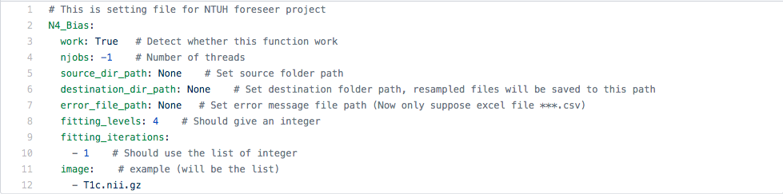
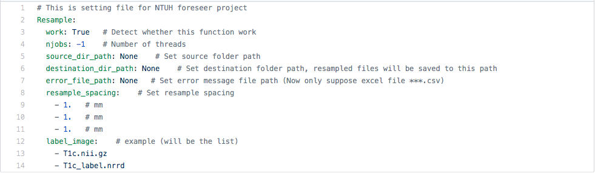
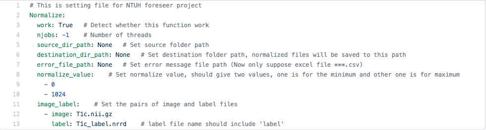
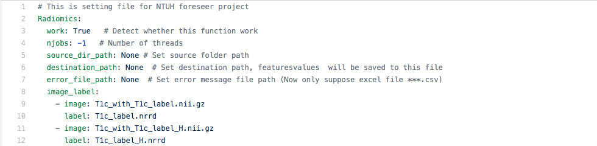

FORESEER CODE
Yuehchou Lee
National Taiwan University, Mathematics
Architecture
Data Sorting
(dev)
Data Preprocessing
Augmentation
(dev)
Radiomics Features Extraction
Models
(dev)
1. Data Sorting
2. Data Preprocessing
N4 Bias Correction

Resample

Normalize based on tumor

3. Augmentation
4. Radiomics Features Extraction
Features extraction

5. Models
Usage
python3 -m
< path to code >
< config
file
>